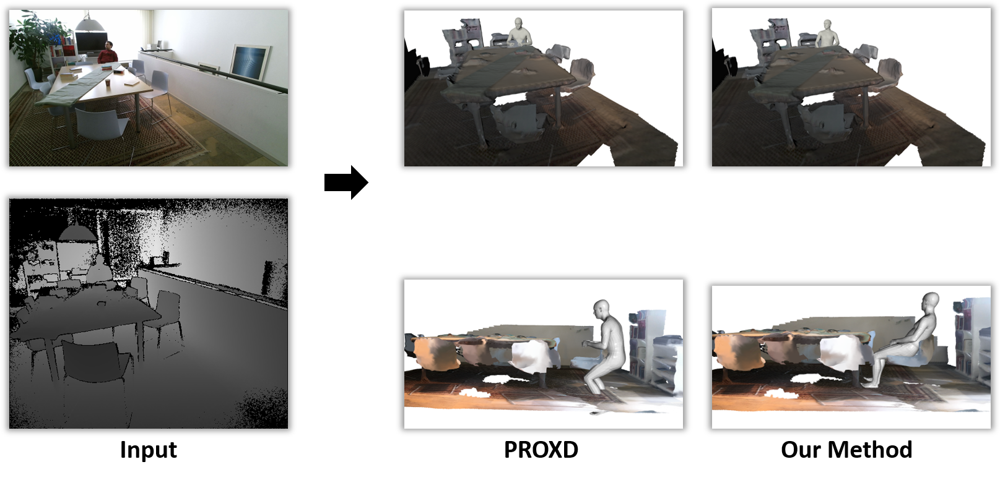
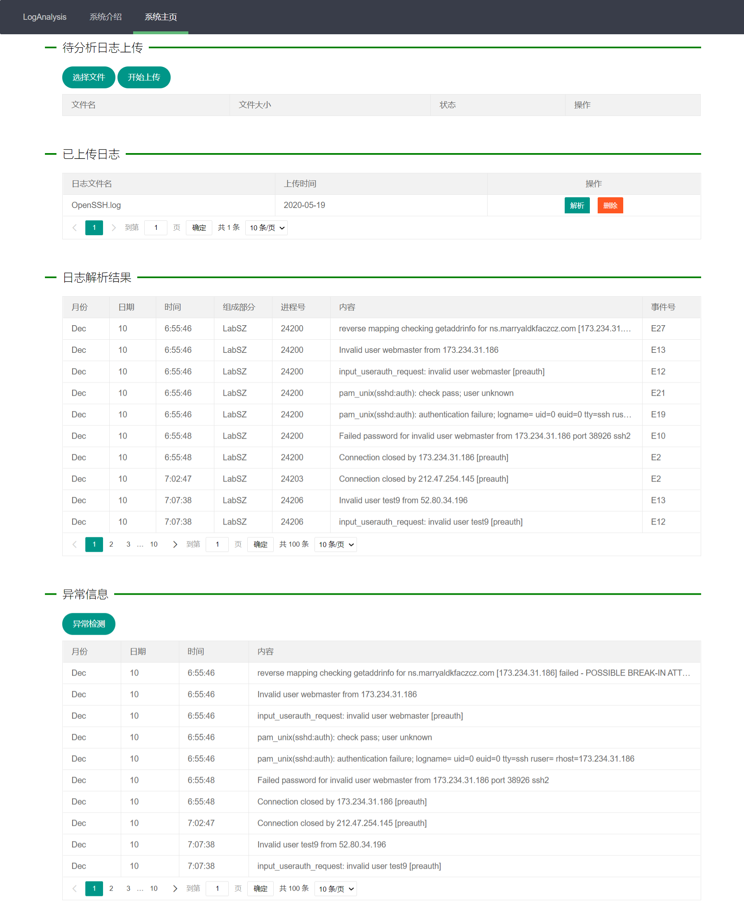
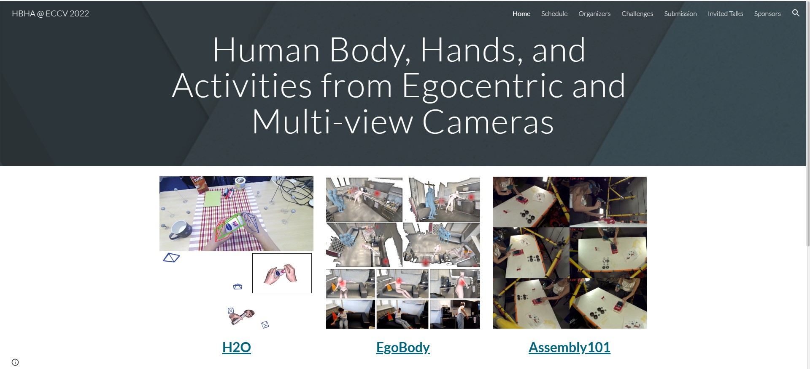
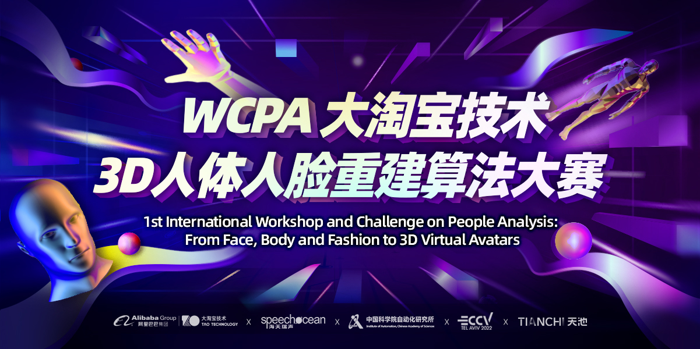

|
I am a master student at Xi'an Jiaotong University in Xi'an Shaanxi, China. My research topic is 3D computer vision. I got my bachelor's degree in computer science and technology at Xi'an Jiaotong University. |

|
|
I have been focusing on 3D human reconstruction over the past two years. Before that, I took part in a project about log anomaly detection. |
|  |
3D Human Reconstruction in Complex Indoor Scenes
Bachelor Graduate Design / Master Research Project Mar 2021 - PresentThe project aims to infer the pose of an occluded human body in an RGB image using scene point cloud and reconstruct the human mesh that matches the image. The reconstructed human pose should be natural and reasonable, with minimal penetration with the scene. I utilized deep learning methods to learn the interaction information between the human body and the scene, and then used this information as a constraint to assist the reconstruction process. Experiments were conducted on multiple datasets containing occlusion, and the results showed a significant improvement compared to methods that did not consider interaction. code |
|  |
Server Log Anomaly Detection System
National College Student Innovation and Entrepreneurship Training Program Dec 2018 - Jun 2020The project aims to use machine learning algorithms to detect anomalies in system logs, replacing traditional rule-based matching methods, reducing labor costs, and improving efficiency. The project involves extracting different types of features from the raw system logs and using machine learning algorithms to detect anomaly information. The results from different algorithms are evaluated, and a web platform is built to visualize the detection process and display the detected anomalies. The project received an excellent rating in the final project defense and ranked 3rd out of 269 participants in the Huawei Log Anomaly Detection competition. code |
|
In my spare time, I participated some competitions related to my research topic. These competitions are held by top-level computer vision conferences. |
|  |
ECCV 2022 HBHA Challenge: Human Body, Hands, and Activities from Egocentric and Multi-view Cameras
Jul 2022 - Oct 2022 The competition aims to reconstruct the human mesh from first-person RGB images while ensuring that the reconstructed human body matches the image. The competition evaluates the models on the EgoBody dataset. I improved the baseline method by introducing some data augmentation strategies to enhance the model's generalization ability on first-person images. The final model achieved a ranking of 3/19, and my paper "Exploring Effective Data Augmentations for 3D Human Pose and Shape Estimation from a Single Egocentric Image" (sole author) was accepted by the ECCV 2022 HBHA Workshop. code |
|  |
ECCV 2022 WCPA Challenge: From Face, Body and Fashion to 3D Virtual Avatars
May 2022 - Aug 2022 The competition aims to reconstruct a human mesh with clothing details in standard pose from multi-view RGB images. The competition evaluates the models on the MVP-Human dataset. I performed pose transformations on existing data and re-rendered it to generate new training data. I trained the model on the augmented data and achieved a final score ranking of 11/545. |
|
During summer, I usually go to some famous companies to to apply what I have learned to real scenarios. |
|
Algorithm Engineer
Jul 2021 - Sep 2021 I am responsible for improving the generalization of the fingerprint recognition model on different datasets. I added automatic data augmentation to the existing training pipeline to alleviate the overfitting problems. I added an OOD detection module to the existing model to extract hard samples. |
 |
Game Development Engineer
Jul 2020 - Sep 2020 I am responsible for optimizing and expanding the code of the game scene editor,and adding a random game environment generation module to the existing editor. The module is used to randomly generate 2D maps to reduce the manual cost of designing game scenes. |
|
Template adapted from this awesome website. |